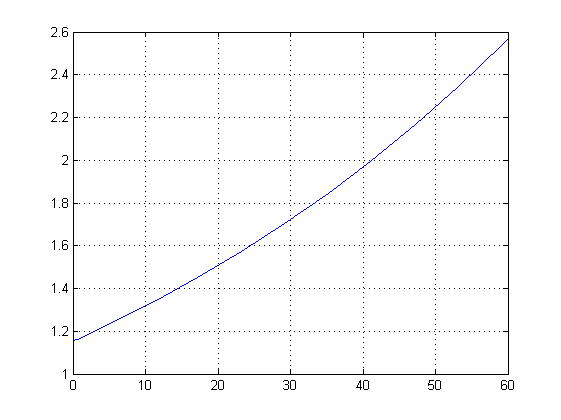
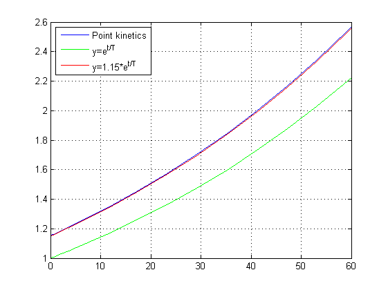
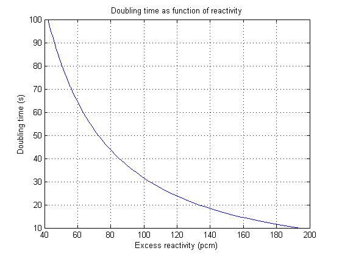
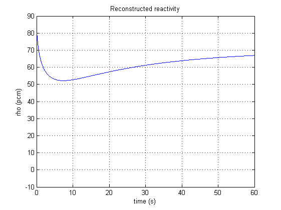
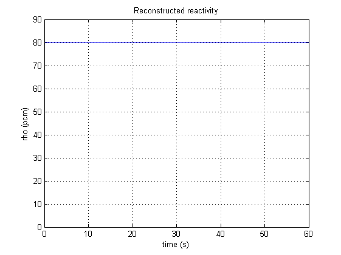
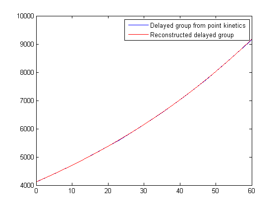

Contents
Exercise 1 Use the m-file pointk.m and ode15s to simulate the response when the excess reactivity is 80 pcm.
al=log(2)/8;
beta=0.00600;
L=1.6825e-5;
y0=[1;beta/al/L];
[t,y]=ode15s(@pointk,[0 60],y0);
figure
plot(t,y(:,1))
grid

2 Define the A-matrix for raa=80 pcm and calculate the eigenvalues.
raa=0.00080;
A=[(raa-beta)/L al
beta/L -al];
ee=eig(A)
T=1/ee(2);
T2=log(2)/ee(2)
ee =
-309.1639
0.0133
T2 =
52.0168
3 In the same plot as you have plotted y(:,1), plot the response corresponding to the positive eigenvalue
y1=exp(t/T);
hold on
plot(t,y1,'g');
y1_corr=1.15*exp(t/T);
plot(t,y1_corr,'r');
legend('Point kinetics','y=e^t^/^T','y=1.15*e^t^/^T','location','nw')
shg

4 Use the function dub2raa to plot the doubling time vs reactivity for T2=10 to T2=100
T2=10:100;
raa=dub2raa(T2);
figure
plot(raa,T2)
grid
ylabel('Doubling time (s)');
xlabel('Excess reactivity (pcm)');
title('Doubling time as function of reactivity');
shg

5 Use the function inv_kinetics to calculate the reactivity and precursors from n
a) From the simulated signal in ex 1 with default values in inv_kinetics
[t1,rho,conc]=inv_kinetics(t,y(:,1));
figure
plot(t1,rho*1e5)
grid
xlabel('time (s)');
ylabel('rho (pcm)');
title('Reconstructed reactivity');
shg

b) From the simulated signal in ex 1 with actual values
[t1,rho1,conc1]=inv_kinetics(t,y(:,1),beta,al);
figure
plot(t1,rho1*1e5)
grid
xlabel('time (s)');
ylabel('rho (pcm)');
title('Reconstructed reactivity');
shg

c) compare conc with y(:,2);
figure
plot(t,y(:,2));
hold on
plot(t1,conc1,'r');
legend('Delayed group from point kinetics','Reconstructed delayed group');
